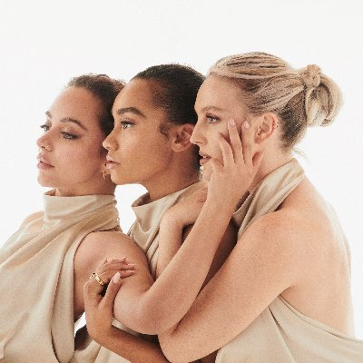
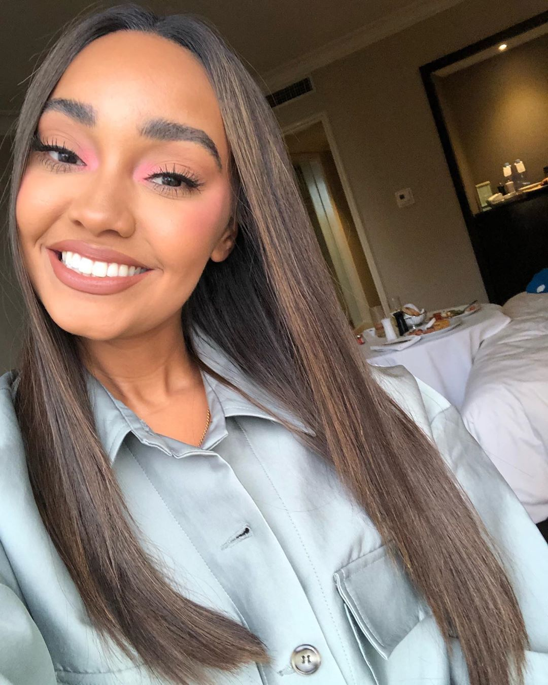
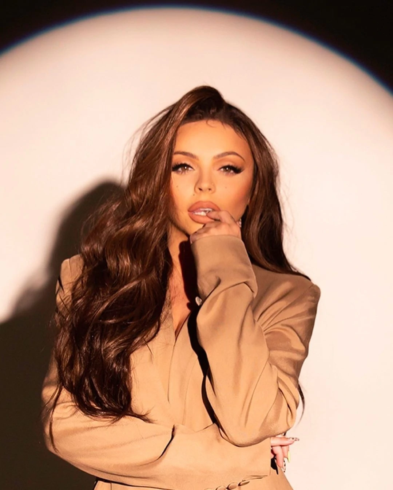

Little MIX
Little Mix is a British girl group, consisting of Leigh-Anne Pinnock, Jade Thirlwall, Perrie Edwards, and previously Jesy Nelson before her departure from the group in 2020. After becoming the first group to win the The X Factor UK in its eighth series, Little Mix signed with Syco Music in 2011 and released their debut single "Wings" the following year. It peaked at number one in the UK and is cited for helping the girl band renaissance in the UK. The group released their debut album DNA (2012), the same year which became the highest chart entry for a debut album by British girl group in the United States. The group was launched into mainstream recognition following the release of their song "Black Magic", the lead single from their third studio album Get Weird (2015). Black Magic became their third number-one single in their home country, spending three weeks at number-one, the most for a girl group song since 2007. In 2017, Billboard ranked "Black Magic" as one of the "100 Greatest Girl Group Songs of All Time".

MEMBERS:
Perrie Edwards
Perrie Louise Edwards (born 10 July 1993) is an English singer. She rose to prominence in the 2010s as a member of the British girl group Little Mix, one of the world's best-selling girl groups. With Little Mix, she released six studio albums and achieved five number-one singles on the UK Singles Chart. In 2021, she became the first female ambassador for the brand "Supreme Nutrition", and in the same year launched her own fashion brand called Disora.
Jade Thirlwall
Jade Amelia Thirlwall (born 26 December 1992) is an English singer-songwriter. She rose to prominence in the 2010s as a member of Little Mix, one of the world's best-selling girl groups. With Little Mix, she released seven studio albums and achieved five number-one singles on the UK Singles Chart.In addition to her solo work, Thirlwall signed a songwriter's publishing deal in 2019 with Sony/ATV Music, and shares songwriting credits for Little Mix, Twice, Billy Porter, Britney Spears, Iggy Azalea, and Nayeon.
Leigh-Anne Pinnock
Leigh-Anne Pinnock (born 4 October 1991) is an English singer, actress and songwriter. She rose to prominence in the 2010s as a member of the girl group Little Mix, one of the world's best-selling girl groups of all time. With Little Mix, she released six studio albums and achieved five number-one singles on the UK Singles Chart. While in Little Mix, Pinnock released her documentary Leigh-Anne: Race, Pop & Power (2021), which was met with critical acclaim. At the 26th National Television Awards, it received a nomination for "Best Authored Documentary".
Jesy Nelson (ex-member)
Jessica Louise Nelson (born 14 June 1991) is an English singer who rose to prominence as a member of the girl group Little Mix from 2011 to 2020, one of the world's best-selling girl groups. With Little Mix, she released six studio albums and achieved five number-one singles on the UK Singles Chart.
|
Facebook
Spotify Youtube JOIN THE DISCORD Little Mix's best tiktoks: CLICK HERE TO WATCH |